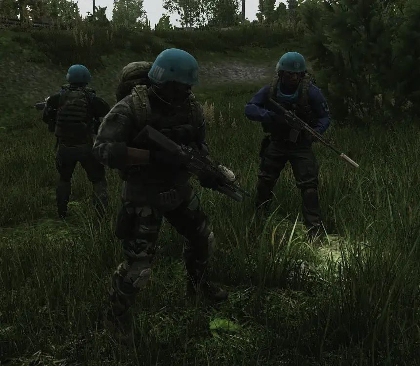

UNTAR Go Home!
- Downloads
- 32,563
- Favourites
- 58
- Mod lists
- 145
UNTAR Go Home!
Version 3.0.1 for SPT 4.0.3 out now!
Fully uninstall the old version of this mod by deleting the mod’s folders/files before updating this mod.
Fika has been tested and is supported by both this and RUAF Come Home, my other faction mod. Make sure this and all dependencies are correctly installed on the host, connecting players, and headless if you use that. Also make sure WTT Common Lib is updated to the latest version that supports Fika. When you do all that, things should work properly!
Yet they’re still here in THE CITY…
UNTAR Go Home! adds UNTAR as a proper faction to SPT. Encounter roving patrols of peacekeepers. Their ROE states that they are only to shoot if threatened, so try not to piss them off!
INSTALL INSTRUCTIONS
Download the .7z file. Unzip in your SPT install directory. Play SPT!
Note for Fika
The client-side portion of this mod and its dependencies are required on all connecting clients, the host, and headless if you are using that. Make sure everyone has the plugin and patcher correctly installed before using on Fika.
UNTAR Go Home! requires BigBrain, MoreBotsAPI, and WTT Common Lib to run. Waypoint is not required but recommended. I also recommend SAIN for enhancing the combat behavior of the UNTAR bots and for configuring their characteristics. There’s now support for Couturier if you have that mod installed, adding new clothes (and later gear) to UNTAR bots!
Note on uninstalling when using SAIN
Seems I found what causes a non-aggression bug, at least with SAIN and my bot mods. If you uninstall a custom bot mod that uses MoreBotsAPI then SAIN will keep references to the now-removed bots in its Default Bot Config Values folder, causing client errors that prevent SAIN from loading properly for bots and disabling their combat behaviors. Deleting the files in this folder and letting SAIN reset them fixes the problem.
Features
UNTARGH adds completely custom bot types that don’t replace existing bots, each with their own loadouts and roles. They are neutral, giving warnings to anyone who strays too close and only firing when ignored or fired upon.
UNTAR Grunt
The bulk of the UNTAR mission’s combat-ready forces. They’re meant to “keep the peace” and protect civilian members of the mission while they perform their duties. Expect them to be armed with a variety of western weapons while wearing standard UNTAR armor.
UNTAR Squad Lead
An NCO in charge of a squad of UNTAR grunts. They keep the group in check while donning equipment from their origin nation. They have fancier weapons and gear on average.
UNTAR Officer
Officers are in charge of ensuring that the mission’s objectives (extract capable civilians, distribute aid to those stranded, and make a f#$% ton of money) are adhered to and completed. Currently, they’re functionally similar to squad leaders besides the fact they always wear a blue beret, but I do intend on expanding their purpose.
Patrols can spawn across several maps in randomly generated patrols at random times during the raid. Their size and composition varies, with some larger patrols being lead by officers and potentially having multiple squad leaders. As more UNTAR types are added patrols will become more varied.
Maps
Settings related to patrols can be adjusted in the config/main.json server file. This includes adding new maps and zones!
Patrols will pick a random available spawn zone found in the config file and a time in a defined range. Maps can be configured to have multiple patrols rolled (which also means you can encounter multiple patrols in one raid).
Currently, patrols will spawn on:
- Woods, 2 possible patrols at a time, decent spawn chance, small-mid sized
- Customs, 1 possible patrol, good spawn chance, mid-big sized
- Interchange, 2 possible patrols at a time, meh spawn chance, small-mid sized
- Shoreline, 1 possible patrol, decent spawn chance, small-mid sized
- Streets, 1 possible patrol, decent spawn chance, mid-big sized.
The UNTAR mission has setup a number of checkpoints across the region to regulate the movement of people and illegal goods while keeping an eye on what’s going on. These checkpoints spawn at the start of the raid in areas affiliated with UNTAR, typically near or at extracts. You might have to change your exfil route if you were planning on an easy escape! Config settings allow you to add your own checkpoints or edit existing ones.
Currently broken. Will be reintegrating through the server part of the mod instead. This will also make it tie directly into the quests that will be coming, with some more fun stuff than just becoming allies to UNTAR bots.
- Services with Peacekeeper related to UNTAR that you can activate in raid. Make UNTAR allies, call in a patrol to come “keep your peace,” or waive checkpoint extract fees once you’re trusted enough by Peacekeeper.
- More UNTAR types. Marksmen, medics, and observers. In addition, I’d like to give current roles some more interactions and purpose.
Not specific to this mod, but related things I want to work on that you might like if you enjoy the new UNTAR faction:
- Dialogue mod. I don’t want to spoil too much since I still need to do some prototyping to make sure it’s feasible, but there will be integration with my other mods if it is.

Config
The config folder in the server mod lets you configure things such as patrol spawning and supported maps. Adjust the conditions for different roles to spawn in patrols or add the chance for patrols to spawn on other maps. I’ll add detailed explanations of the config options later but they’re fairly self-explanatory at the moment.
Compatability
UNTARGH has full (I might’ve missed something. If you notice any problems with SAIN or errors do let me know!) compatability with SAIN, with UNTAR bots using SAIN behaviors and having dedicated config options in SAIN’s settings.
UNTARGH has no specific compatability code at the moment with any spawn mods. I still have to do some testing and collaborate with some authors to make sure UNTAR spawning works 100% with spawn mods. If you encounter any issues with spawning while using these sorts of mods I won’t offer support, but I will accept logs so I can work on ironing out compatability.
MOAR
MOAR seems to work with UNTARGH, but there’s no additional compatability. Basically, UNTAR works off my spawn system, everything else works on MOAR’s system.
ABPS
ABPS DOES WORK with UNTAR Go Home! Again, UNTAR patrols use my system and aren’t handled by ABPS but they will spawn while ABPS handles everything else.
UNTARGH is relatively untested with these mods. Questing Bots and Looting Bots don’t conflict at the very least, so you can play with those just fine from what I can tell. I’ll be conducting some testing and patching in necessary compatability fixes. Eventually, I want to include functionality related to Questing Bots in particular but that’s for a later update.
Credits and Thanks
Thanks to GrooveypenguinX and nameless___ for letting me reference yalls code, and specifically Groovey for giving me the run down on what I needed to do to get custom bots working. This mod wouldn’t exist without that starting point.
Thanks to Solarint for making a mod I felt was necessary to have compatability for before publishing this mod. No, seriously, SAIN is amazing and if you don’t already have it installed give it a look.
Thanks DrakiXYZ for BigBrain, absolutely necessary mod for anything bot-related. I’ll be using BigBrains heavily in future versions of this mod (and more coming mods) to implment some custom behaviors. The less I have to touch Big Silly Goose’s code the better lmao.
Goes without saying that thanks should be given to the SPT team for enabling any of this in the first place. Yall rock!
Support Me
Buy me a Java Monster so when I get back from work I can fix my broken releases at lightning speed. Don’t have to though, I’ll do it for free anyways! https://ko-fi.com/tacticaltoaster
Version
3.1.1
- Patrol posture for checkpoints
- Based on new info from Big Silly Goose, UNTAR is aggressive to scavs. Will still warn PMCs if too close but otherwise neutral to USEC and BEAR
- Spawn fixes targeted at better ABPS compatibility
Dependencies
Version
3.1.0
3.1.0
- Raiders will sometimes hunt UNTAR on maps UNTAR appears on.
- Balance changes.
Dependencies
Version
3.0.1
Fika compatability tested for latest Fika version, make sure you install this mod alongside the dependencies correctly for all clients, the host, and headless.
Make sure you fully uninstall the old version of the mod before updating to this version, and make sure you update to MoreBotsAPI version 1.0.1 also. Doing that should fix most of the issues people were running into (there may still be orange warnings about loading types, there are no problems being caused and it’s just a debug message I have to remove), including dying breaking the game and UNTAR bots not firing back after being shot.
Dependencies
Version
3.0.0
UNTAR Go Home! 3.0.0 for SPT >=4.0.3
New dependencies: WTT Common Lib and MoreBotsAPI. Make sure you also have BigBrain
- A few fixes related to switching everything to the dedicated API.
- Support for Couturier clothes if you have that mod installed, not a dependency though. You’ll see some new pants on UNTAR members.
Dependencies
Version
2.1.0
UNTAR Go Home! 2.1.0 for SPT version 4.0.X
This release includes new checkpoint UNTAR squads that spawn at the start of the raid, completely friendly UNTAR bots when you reach Peacekeeper level 3, and various fixes.
Additions
- Added new checkpoint system and custom behaviors. Certain maps have the chance to spawn UNTAR checkpoint groups that will guard a set location. These groups spawn at the start of the raid and mostly occupy areas near or at extracts affiliated with the UNTAR mission (either by the extract name or with signs that signify UNTAR presence). You can define your own checkpoints in the config file!
- Added connection to Peacekeeper. Having level 3 or 4 Peacekeeper makes UNTAR bots friendly to you, allowing you to get closer without being warned to get away. Perfect for extracting from a spot UNTAR has set up a checkpoint. Do be careful though, getting in their face may still upset them!
- Lots of new names from various UN European member nations.
Fixes
- Fixed crash/error when killed by any UNTAR bots.
- Fixed revenge (and other bot WildSpawnType) properties not loading properly, meaning if you killed a bot instantaneously it would not trigger other UNTAR bots from becoming hostile to you.
Dependencies
Version
2.0.0
UNTAR Go Home! for SPT version 4.0.0
Only BigBrains required for this version!
This release is primarily for updating everything to SPT 4.0.0, with some loadout additions.
- Added FAL loadouts to grunts and officers.
- Added front sights to HK 416 handguard for cases where a short 416 is generated without an optic.
Version
1.0.0
1.0.0 release